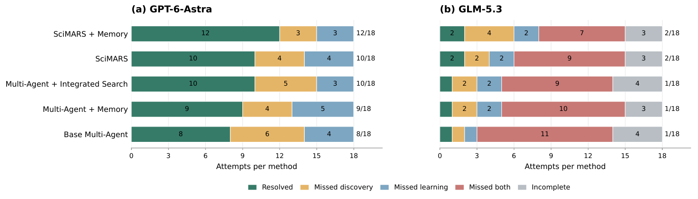

A scientific agent can write code that runs, produce a correctly formatted file, and still fail the task. Sometimes the failure happens when one agent hands a working result to another. Sometimes useful evidence never reaches the agent that needs it.
In one cell-counting experiment, the coder produced ten varied predictions using the correct data directories. The verifier answered “Yes.” Then the finalizer rewrote the paths, accidentally pointed the training directory at the test directory, and replaced the predictions with ten zeros.
The program still exited without an error. The output still had the expected shape. The scientific result was broken.
SciMARS asks whether a team can use evidence from such failures to improve how it works. The updated framework addresses two problems together: preserving observations across agents, and revising the procedures that determine what agents do with those observations.
Three components a team can improve
SciMARS stands for Multi-Agent Recursive Self-Improvement for Closed-Loop Scientific Discovery. It adapts the execution harness: the procedures, communication contracts, and, in the memory extension, evidence-use policies that govern a scientific team.
Role procedures: how an agent performs its work. A finalizer can learn to preserve validated code and rerun checks after any rewrite.
Coordination contracts: what agents pass to one another. A verifier–finalizer handoff can require the code, execution evidence, and checks supporting the output.
Memory policies: how agents record, retrieve, and receive shared evidence. A planner can retrieve a failed check recorded by the verifier before proposing its next experiment.
SciMARS edits the first two components. SciMARS + Memory adds an independent editor for the third. The execution team has seven logical responsibilities: analyzer, planner, coder, verifier, router, debugger, and finalizer. An adapter can group these responsibilities into fewer agents. The GPT-6-Astra discovery cohort, for example, uses a worker and a reviewer.
The editable surface remains bounded. The system does not rewrite its optimizer, validation rules, tools, official evaluator, or memory service. Adaptation resets for each evaluation task, so these experiments study improvement within a task rather than persistent learning across tasks.
Remembering evidence is different from changing how it is used
The shared evidence graph is inspired by Mycelium’s active context graphs. It carries observations, findings, hypotheses, plans, and unresolved questions across roles, including beyond the current handoff. Records retain authorship and versions, while links express support, contradiction, derivation, and dependency.
A useful example is a failed array-shape check. The verifier records the failure and links it to its execution. The planner can retrieve that record and revise the plan instead of repeating the same incompatible operation.
Graph contents and memory policy have different jobs. New records preserve observations. The policy determines recording duties, retrieval filters, query hints, record limits, and subscriptions. The memory editor can change these policies, but it cannot rewrite stored measurements or provenance rules.
This distinction also defines the control experiment. Multi-Agent + Memory uses a shared graph with a fixed policy and no outer harness revision. SciMARS + Memory uses the same graph interface while adapting roles, coordination, and memory policy. Both accumulate records during execution; only the latter changes how the team uses them.
Propose independently, probe, then compose
Each round begins with a reference execution of the current harness. The editors see the same reference evidence, but do not read one another’s proposals.
- Propose scoped repairs. The role editor changes procedures. The coordination editor changes at most one existing route or contract. With memory enabled, a third editor changes only memory policy.
- Probe each candidate. Run the proposed harnesses with matched public inputs and limits in isolated contexts. Memory-enabled branches start from the same permitted seed and keep their writes separate.
- Compose using execution evidence. Retain the current harness, adopt a proposal, or combine supported changes. Coordination and memory policy must come from the original or tested candidate options. A new combination receives its own execution.
- Select an outcome and its generating harness. Use public requirements, programs, traces, artifacts, and applicable public checks to choose what to retain.
- Reflect within the task. Record grounded lessons for later revisions. The selected harness governs the next round.
Official benchmark scores stay outside the revision loop. The host invokes the official evaluator only after final commitment. A completed tool call, runnable program, or recorded finding is useful evidence, but does not establish correctness by itself.
Reuse verified executions, not assumptions
If the composed successor exactly matches a runnable harness already executed in the same round, SciMARS can reuse that execution. The check compares the full harness, including memory policy when present, and verifies the saved program’s integrity.
A new combination still needs a new probe. A reuse receipt tells reflection that this is existing evidence, not a fresh observation. With reuse, SciMARS needs three team executions per round and SciMARS + Memory needs four; probing a new successor adds one. Editor and reflection calls consume additional resources within the same task allowance.
Updated results across scientific and interactive tasks
The November 8 manuscript compares five methods: the base multi-agent team, fixed shared memory, integrated workflow search, SciMARS, and SciMARS + Memory. Within each benchmark and model cohort, methods share the total model allowance, including execution, edits, probes, and selection.
| Method | ASB GPT-6-Astra | ASB GLM-5.3 | ScienceAgentBench | AppWorld |
|---|---|---|---|---|
| Base multi-agent | 8 / 18 | 1 / 18 | 11 / 38 | 5 / 20 |
| Multi-agent + Memory | 9 / 18 | 1 / 18 | 11 / 38 | 6 / 20 |
| Integrated search | 10 / 18 | 1 / 18 | 11 / 38 | 8 / 20 |
| SciMARS | 10 / 18 | 2 / 18 | 13 / 38 | 10 / 20 |
| SciMARS + Memory | 12 / 18 | 2 / 18 | 14 / 38 | 11 / 20 |
Autonomous Science Bench tests budgeted experimental design. Its six campaigns cover nuclease and biosensor engineering, propylene and Suzuki reaction optimization, and oxygen-evolution and coercivity campaigns. Three runs per campaign give 18 attempts per method and model. Success requires passing both discovery and held-out learning gates.
With GPT-6-Astra, SciMARS + Memory resolves 12 of 18 attempts, compared with 8 for the base team, 9 for fixed memory, and 10 for both integrated search and SciMARS. All GPT-6-Astra attempts have official outcomes. With GLM-5.3, SciMARS and SciMARS + Memory both resolve 2 of 18, compared with 1 for each remaining method. The GLM cohort also contains incomplete attempts, reported separately in the paper; SciMARS and SciMARS + Memory each have three.


This discovery setting uses experimental-data replay and a digital twin. It tests decisions under simulated experimental feedback rather than new physical wet-lab experiments. Repeated runs measure variation on fixed fixtures, not independent samples of new campaigns.
ScienceAgentBench tests scientific programming. The study includes all 38 machine-graded tasks in the evaluated snapshot and excludes 64 visualization tasks before evaluation. SciMARS + Memory solves 14 / 38 (36.8%), SciMARS solves 13 / 38, and the other methods each solve 11 / 38. For SciMARS versus integrated search, seven successes are shared, six are SciMARS-only, and four are integrated-search-only.
AppWorld tests interaction with simulated application state. The study randomly selects 20 tasks using a seeded hash order: ten Music and ten Finance tasks, with one task per scenario. SciMARS + Memory solves 11 / 20, comprising seven Music and four Finance tasks. The base team solves 5 / 20, fixed memory 6 / 20, integrated search 8 / 20, and SciMARS 10 / 20.
Back to the ten zero predictions
The cell-counting case makes the distinction between role and coordination edits concrete. The task asks for ten predictions on BBBC002 Drosophila KC167 images, saved in a single count column.
The role-only repair changes coder, verifier, and finalizer procedures while preserving coordination. It requires checked paths, numerical output checks, and preservation of working code. The resulting run keeps ten nonzero predictions and preserves the output-file hash through finalization.
The coordination-only repair preserves every role procedure and routing flag. It adds a verifier–finalizer contract carrying verification, code, and execution evidence, with instructions to preserve the validated pipeline.
| Candidate | Nonzero predictions | MAE | Pass |
|---|---|---|---|
| Reference | 0 / 10 | 78.00 | No |
| Role-only repair | 10 / 10 | 6.17 | Yes |
| Coordination-only repair | 10 / 10 | 11.80 | Yes |
Explore SciMARS with an existing team
The GitHub repository provides the implementation and integration documentation. Start with the custom-team guide to understand how an executor applies role procedures and handoff contracts, or explore the AppWorld quickstart.
The memory extension adds a second question to any integration: which evidence should persist across roles, and how should the team retrieve it? The framework keeps that policy separate from both the stored observations and the procedures assigned to agents.
What comes next?
The updated experiments support combining shared memory with task-local harness adaptation. Across the evaluated cohorts, SciMARS + Memory improves on the base team. Its advantage over SciMARS alone varies by setting, including a tie in resolved GLM-5.3 discovery attempts.
Broader evaluation should test additional model backends, multi-agent systems, and more complete benchmark suites. The current results cover the reported cohorts and configurations, and the discovery experiments use replay and simulation.
Based on SciMARS: Multi-Agent Recursive Self-Improvement for Closed-Loop Scientific Discovery, by Weimin Wu and Han Liu, manuscript dated November 8, 2026. Figures 1 and 2 are reproduced from the supplied manuscript. The film introduces the original framework; the text and results above include the updated memory extension. Code and documentation: SciMARS on GitHub.